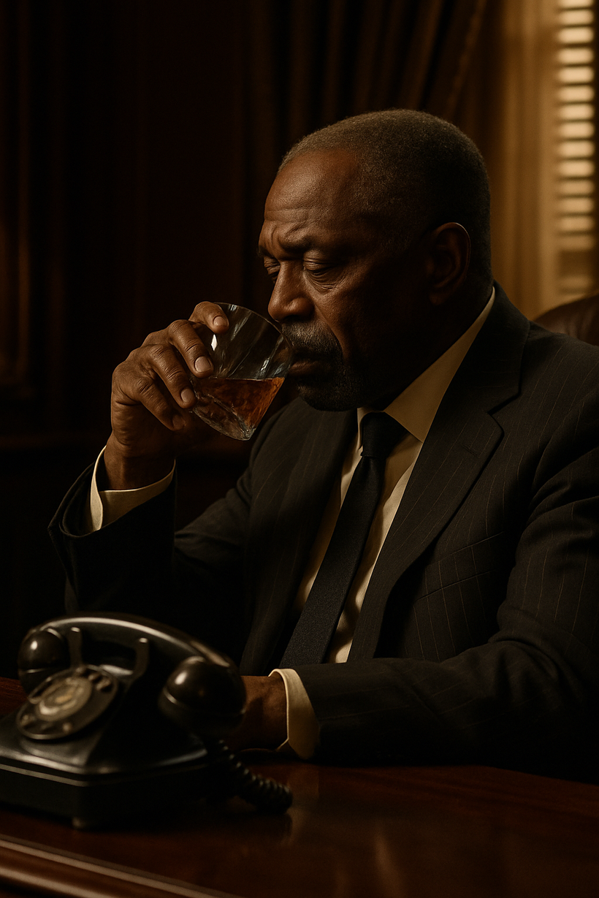
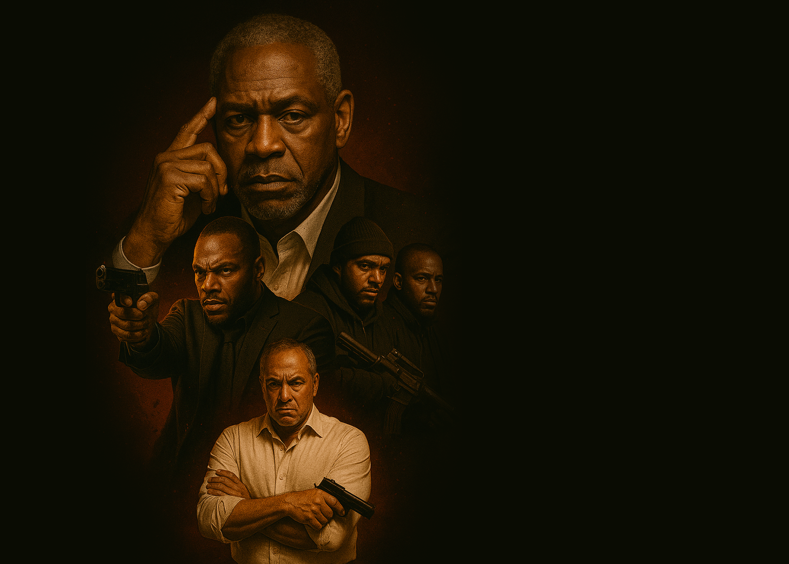
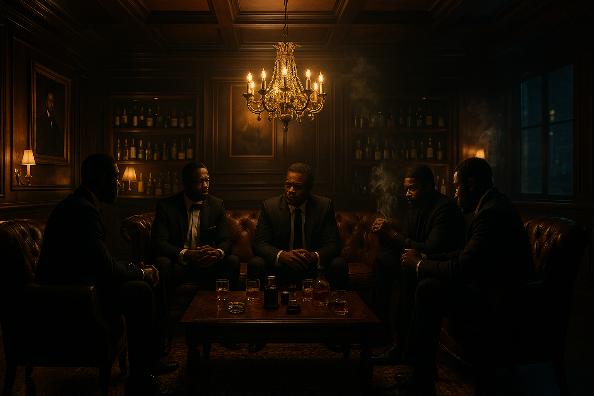
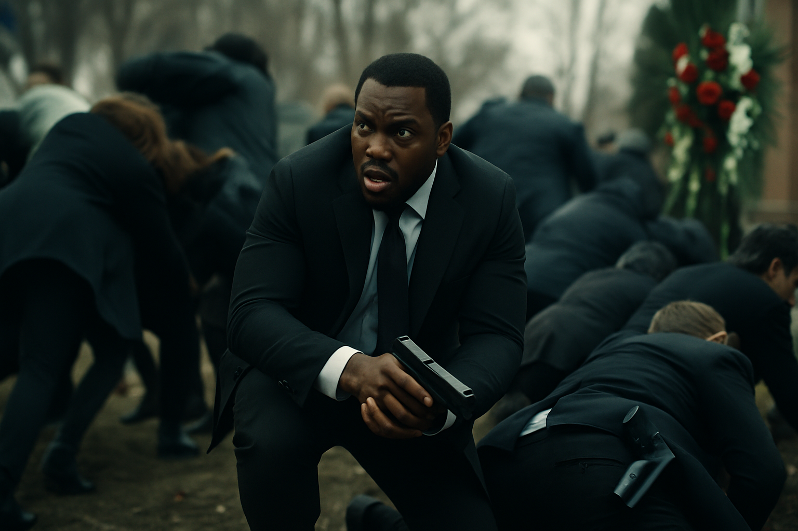
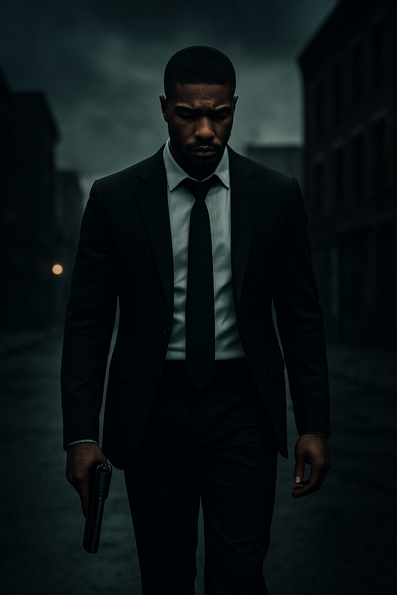
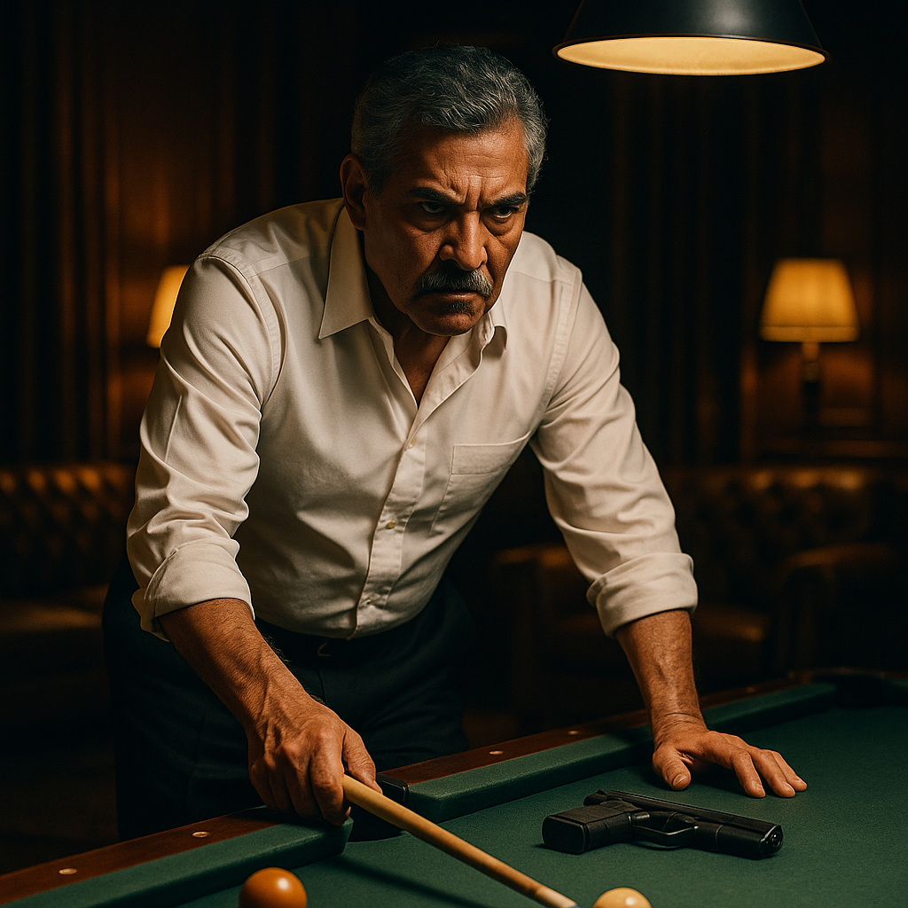
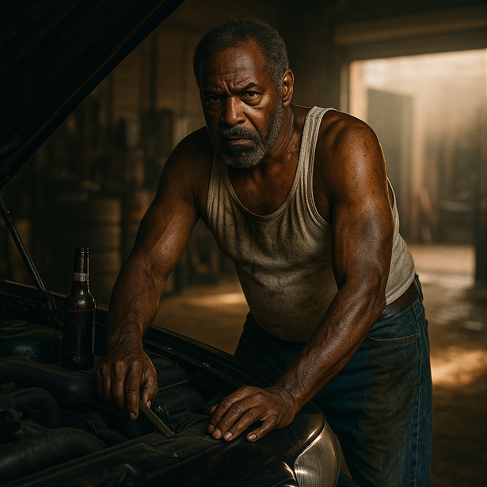
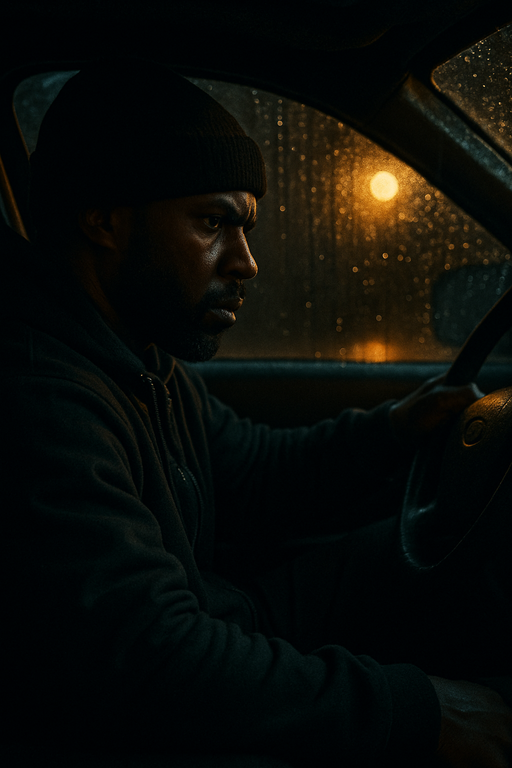
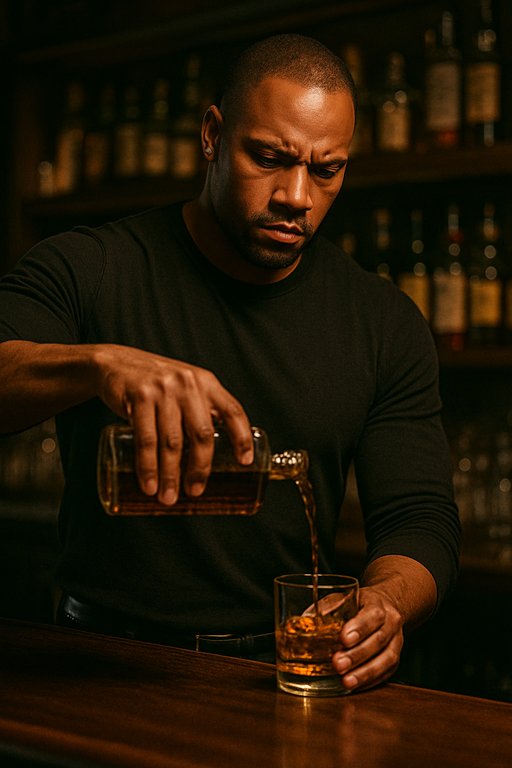
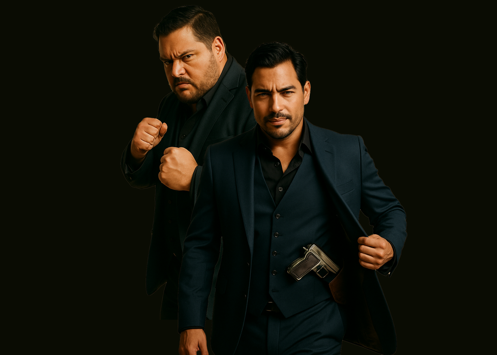

HarveyA powerful crime boss and grieving father whose pride and legacy send him down a path of vengeance.

Feature film written and directed by Patrick Deal
When his only son is brutally murdered, crime boss Harvey Morrow wages war against rival kingpin Salvatore Alvarez, igniting a cycle of vengeance that threatens to consume their families, their city, and everything they’ve built.
This campaign video introduces the world, tone, and emotional stakes behind Kings of Fordside.
Play Video
Kings of Fordside follows Harvey Morrow, a powerful but aging crime boss whose world collapses when his only son, Arthur, and Arthur’s pregnant fiancée are murdered in a mugging orchestrated by the reckless sons of rival kingpin Salvatore Alvarez.
What begins as personal tragedy spirals into an all-out gangland war, pitting two fathers against each other, each blinded by grief, each unwilling to let go.
Violence may win battles, but it erodes the very families and communities men claim to protect.
Core themeAction grows directly from character choices, consequences, grief, rage, and legacy.
The film alternates pressure and release as Harvey and Sal’s feud becomes psychological warfare.
The violence is designed to carry emotional weight rather than exist as empty spectacle.
At Harvey's side is Dwight, his loyal enforcer struggling with the weight of his conscience, and Cliff, a ruthless soldier who thrives on violence. As Harvey plots vengeance, he attempts to recruit old allies—men from Harvey's past who represent the lives Harvey might have chosen but didn't, deepening the story’s moral core.



HarveyA powerful crime boss and grieving father whose pride and legacy send him down a path of vengeance.

DwightHarvey’s loyal enforcer, tactical and composed, torn between loyalty and escape.

SalA rival kingpin and Harvey’s mirror: another father destroyed by pride and vengeance.

BookerA hardened mechanic and longtime ally whose loyalty is fueled by old resentments.

CliffHarvey’s brutal soldier: reckless, volatile, bloodthirsty, and built for chaos.
A respected professor who left the life behind and represents the possibility of redemption.

HenryA strong silent type, close to Dwight, loyal to the family, and tuned into the city’s movements.
Emotionally grounded, perceptive, and resilient, she challenges Dwight to find a life beyond violence.

Tony & VitoLoyal Alvarez soldiers: one quietly efficient, the other hot-headed, ruthless, and old-school.
The funds raised will go directly into bringing this film to life at a high level of quality and realism. A major portion of the budget will be dedicated to practical effects, allowing us to create grounded, immersive visuals in-camera rather than relying solely on digital shortcuts.
We are also investing in a skilled and committed crew—cinematography, sound, lighting, and production design—to ensure every frame feels cinematic and intentional. Additionally, funding will cover production insurance and contingency resources, including visual effects support if needed, so we can safely and professionally execute more ambitious sequences. Every dollar is focused on elevating the film's authenticity, performance, and overall impact on screen.
 Production
Locations, crew, equipment, safety, transportation
Production
Locations, crew, equipment, safety, transportation
 Cast
Attachments, rehearsal, payroll, travel
Cast
Attachments, rehearsal, payroll, travel
Your support helps cover production, cast, and post-production costs. Click below to donate directly through PayPal.